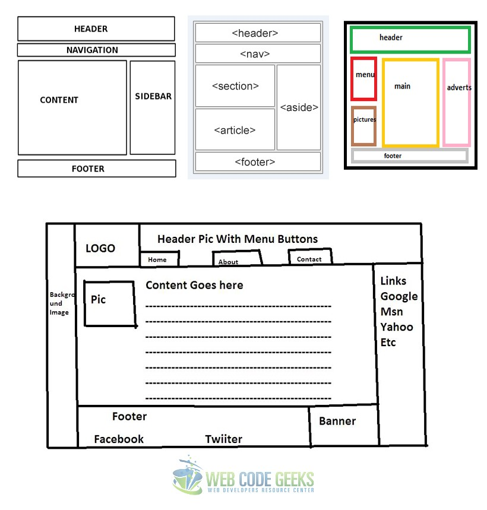
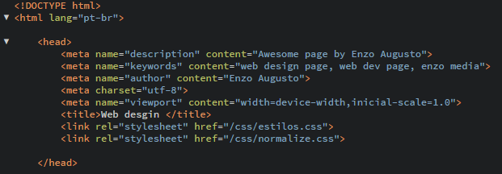

Algumas coisas importantes que você não pode esquecer.
Há um layout padronizado para a criação de paginas html, a imagem mostra um exemplo de como se encaixar nesse padrão.
Essas tags serão sempre utilizadas para iniciar o html, não esqueça!
Aqui estão as tags que não podem ser esquecidas, como:
Lembre-se que estamos no básico!
Pratique, pratique e pratique. Crie sites com a sua imaginação, algo que você queira colocar para se lembrar ou que gostaria de mostrar para o mundo, whatever, sempre continue praticando.
Se nada vier a mente, use o psd e transfira o que você vê ali para o html e css.
Por Enquanto achei esses dois exemplos que parecem simples para copiar, faça-os!
Shanna Comptom Magali Boordieu